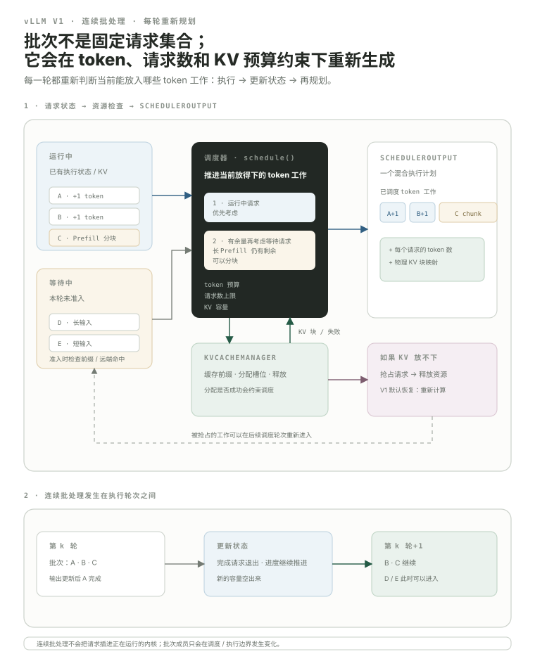

Scheduler 与 Continuous Batching：GPU 下一轮到底算谁？
在线推理的请求不会整齐地同时到达，也不会同时结束。A 还在 decode，B 刚结束，C 正在做长 prompt 的一段，D/E 又在等待。如果沿用“凑一个固定 batch → 整批跑到底”的思路，空槽和长尾会浪费 Graphics Processing Unit (GPU，图形处理器)。vLLM 的核心变化之一，是把 batch 看成每个 scheduling/execution iteration 都可以重新规划的动态 token-work 集合。
- 解释 static batching 为什么容易被长尾请求拖住。
- 准确理解 continuous batching：batch membership 可以在 execution iterations 之间持续变化。
- 知道当前 V1 Scheduler 内部没有两套独立的 “Prefill phase / Decode phase” 调度器，而是围绕 token progress 统一推进请求。
- 知道 Scheduler 同时受 scheduled-token budget、input budget、最大 running requests、Key-Value (KV，键-值) capacity 等资源约束。
- 理解当前 V1 的 chunked prefill 与 running-first 策略怎样细化调度粒度。
- 知道当前 V1 的默认 preemption 恢复方式是 recompute，而不是旧式 SWAP。
请求长度不同，最慢的那一个会让固定 batch 很尴尬。
想象 4 个请求同时开始，输出长度分别是 2、4、8、20 tokens。如果规定“这个 batch 的 4 个槽位直到全部请求结束都不换人”，前两个请求很快完成，但它们留下的槽位会空着。
这不是 GPU 算不动，而是调度策略没有及时把空出来的容量交给新的 token work。
谁结束，下一轮就可以换新人进来。
Continuous batching 的核心不是某个神奇 kernel，而是 iteration-level re-planning：每轮执行前根据最新 request state 重新决定本轮一起执行哪些 requests / tokens。A 完成后，下一轮就可以把释放出的资源给 E。
不要误解：continuous batching 不是“在一个正在跑的 GPU kernel 里随时插 request”。更稳定的心智模型是：batch membership 在离散的 scheduling/execution iterations 之间持续更新。
一次 schedule() 真正在做的事：从 running / waiting 状态出发，在多个预算和 KV allocation 约束下生成一份可执行计划。
图里故意让 running 同时包含 decode-like request 和仍在 Prefill 的 request。因为当前 scheduler 的核心抽象不是“切换 Prefill 模式 / Decode 模式”，而是：这个 request 已计算到哪、还欠多少 token work、本轮资源允许推进多少。

当前源码还处理 Data Parallel (DP，数据并行) prefill balancing、encoder input、Low-Rank Adaptation (LoRA，低秩适配)、structured output、speculative decoding、KV Connector remote load 等额外条件。初学时不要一次吃完；先把上图的三件事分清：request state、resource budget、KV ownership。
schedule() 先遍历 self.running，再在没有本轮 preemption 且未暂停等条件下处理 waiting queue；KV blocks 通过 kv_cache_manager.allocate_slots(...) 约束可调度量。“想跑谁”不够，必须同时满足本轮 token 数、输入规模、并发数和 KV 空间。
max_num_batched_tokens；每轮 token_budget 从这里开始扣。scheduler_config.max_num_seqs；waiting admission 不能让运行资源域无限增长。allocate_slots 失败也会改变调度甚至触发 preemption。当前 schedule() 同时维护 input_budget = max_num_batched_tokens，并叠加 speculative draft slots、encoder compute/cache、max model length 等约束。所以 scheduler 不是只看一个“batch size”。
教学上可以说 Prefill 与 Decode 共享机器；源码里更准确的说法是：Scheduler 统一推进每个 request 的 token progress。
当前 V1 schedule() 的源码注释明确写着：Scheduler 内部没有独立的 “decoding phase” 或 “prefill phase”。它看的是 num_computed_tokens 与当前已知 token state 之间还差多少，再在预算允许时推进。长 prompt 因此可以推进很多 tokens；baseline decode request 通常只多一个新的已知位置。
这条区别对读源码很重要。Prefill / Decode 仍然是理解 workload 的好概念，但不要进 scheduler.py 后去寻找两套独立 phase loop。Prefix caching、chunked prefill、speculative decoding 都能被统一进“还差多少 token progress”这套模型。
长 prompt 不必被当成一个不可切分的大石头。
Chunked prefill 允许一个长 prompt 分多轮推进。例如 8000-token prompt 不必在一次 scheduler iteration 中全部处理；可以只推进受当前 token/input budget 限制的一段，之后继续。
8000 tokensbudget-limited chunkcontinue later当前 vLLM V1 优化文档说明：在条件允许时 chunked prefill 默认启用；调度策略优先 pending decode work，再用剩余的 max_num_batched_tokens budget 安排 prefill，放不下的 prefill 自动切 chunk。这个高层 policy 与当前 scheduler 的 running-first 实现可以一起理解：已有 decode-like work 通常已经在 running 集合里，而长 Prefill 也可能以 in-progress chunk 的身份留在 running。
Scheduler 可能需要让已有 request 暂时退让；当前 V1 默认通过 recompute 恢复。
当前 V1 scheduler 在 running request 无法分到需要的新 blocks 时，会进入明确的 preemption 路径：选 victim、把它从 running ownership 移出、释放资源，再尝试让当前工作继续。当前 V1 优化文档明确说明默认 preemption mode 是 RECOMPUTE，而不是旧 V0 路径常见的 SWAP；恢复时重新计算必要 KV 状态。
它是有限 KV capacity 下继续服务的资源管理策略，但频繁 recompute 会浪费算力并恶化端到端 latency。带 KV Connector 时，in-flight KV delivery 还会增加 source/destination lifetime 约束，08.3 会继续拆。
把几千行 scheduler 先压成“推进 token progress + 分配 KV”的伪代码。
token_budget = max_scheduled_tokens
# 1. running requests
for req in running:
want = known_tokens(req) - req.num_computed_tokens
want = cap_by_budgets(want, token_budget, input_budget)
blocks = kv_manager.allocate_slots(req, want)
if blocks is None:
preempt_victim_and_retry()
else:
schedule(req, want)
token_budget -= want
# 2. waiting requests when admission is allowed
while waiting and token_budget > 0 and running_slots_available():
req = choose(waiting)
local_hit = kv_manager.find_cached_prefix(req)
remote_hit = connector_match_if_any(req, local_hit)
want = remaining_known_tokens(req, local_hit, remote_hit)
chunk = cap_by_budgets(want, token_budget, input_budget)
blocks = kv_manager.allocate_slots(req, chunk)
if blocks is None:
break
schedule(req, chunk)
token_budget -= chunk
return SchedulerOutput(...)这仍是教学伪代码，不是逐行复刻；但它和当前源码的关键抽象一致：谁先？已计算到哪？这轮还能推进多少？缓存命中多少？要多少 blocks？预算够不够？
这次只读 scheduler 周围的四个文件。
能解释 scheduler，才算开始懂 serving。
num_computed_tokens 与当前已知 token state 之间的差距，再按预算推进。长 prompt 往往一次推进一段；baseline decode 往往只推进新增加的位置，因此 workload 不同，但调度抽象可以统一。allocate_slots 失败时尝试 preempt victim 释放资源；所以 KV ownership 是 scheduling 的硬约束，不是执行后的附属 bookkeeping。本课出现的缩写与术语
第一次在正文使用时采用 English Full Name (ABBR，中文名)；这里集中复习，避免学习时来回跳总站 Glossary。
| 缩写 | English full name | 中文名 | 本课怎么理解 |
|---|---|---|---|
GPU | Graphics Processing Unit | 图形处理器 | 大模型训练与推理中执行 GEMM、Attention 等高并行计算的主要设备。 |
KV | Key-Value | 键-值 | 自回归 Attention 需要复用的历史 Key/Value 状态。 |
DP | Data Parallel | 数据并行 | 不同 replica 处理不同数据，再同步训练状态；它主要切数据而不是切单层模型。 |
LoRA | Low-Rank Adaptation | 低秩适配 | 用低秩增量参数高效适配预训练模型的方法；也可能进入 prefix-cache identity。 |
CPU | Central Processing Unit | 中央处理器 | 主要承担 Python 控制流、调度、数据准备与部分通信控制。 |